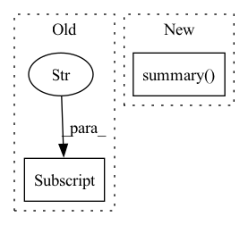

Pattern ID :19578
Before Change
analysis.benchmark_results = [performance_summary]
summary = analysis.summary()
summary["MODEL"] = model_path
_display_summary_as_table(summary)
if save:After Change
by_layers: bool = convert_to_bool(by_layers)
analysis.benchmark_results = [performance_summary]
summary = analysis.summary(
by_types=by_types,
by_layers=by_layers,
)
summary.pretty_print()
if compare is not None:
if "," in compare:In pattern: SUPERPATTERN
Frequency: 3
Non-data size: 2
Instances Fragment ID: 63941631
Project Name: neuralmagic/deepsparse
Commit Name: f9c812958895f509c2c6c0194b839cb47c2faed8
Time: 2023-04-19
Author: rahul@neuralmagic.com
File Name: src/deepsparse/analyze.py
M Class Name: AnonimousClass
N Class Name: AnonimousClass
M Method Name: main(7)
N Method Name: main(4)
M Parent Class:
N Parent Class:
M File Name: src/deepsparse/analyze.py
N File Name: src/deepsparse/analyze.py
M Start Line: 64
M End Line: 92
N Start Line: 48
N End Line: 122
Before Change
_profiler_options = ProfilerOptions(options_str)
if _profiler_step_id == _profiler_options["batch_range"][0]:
paddle.utils.profiler.start_profiler(_profiler_options["state"], _profiler_options["tracer_option"] )
elif _profiler_step_id == _profiler_options["batch_range"][1]:
paddle.utils.profiler.stop_profiler(_profiler_options["sorted_key"], _profiler_options["profile_path"])
if _profiler_options["exit_on_finished"]:After Change
if _profiler_step_id == _profiler_options["batch_range"][1]:
_prof.stop()
_prof.summary(op_detail=True, thread_sep=False, time_unit="ms")
_prof = None
if _profiler_options["exit_on_finished"]:
sys.exit(0)
Fragment ID: 63941630
Project Name: paddlepaddle/paddlenlp
Commit Name: e274c447b22e06fa834c7095bedda937bf0ac7cc
Time: 2023-06-07
Author: 38800877+mmglove@users.noreply.github.com
File Name: paddlenlp/utils/profiler.py
M Class Name: AnonimousClass
N Class Name: AnonimousClass
M Method Name: add_profiler_step(1)
N Method Name: add_profiler_step(1)
M Parent Class:
N Parent Class:
M File Name: paddlenlp/utils/profiler.py
N File Name: paddlenlp/utils/profiler.py
M Start Line: 98
M End Line: 105
N Start Line: 98
N End Line: 124
Before Change
print(layer_index, " ", number_of_filters)
model = self.batchnorm_modify(model)
if env["device"] is "cuda":
self.model = model.cuda()
print("After fine-tuning, the performance of model:")
self.attack.validate_func()After Change
model = self.batchnorm_modify(model)
print("After fine-tuning, the performance of model:")
self.attack.validate_func()
model.summary(depth=5, verbose=True)
self.model._train(loader_train=self.clean_dataloader, suffix="_fine_pruning", **kwargs)
self.attack.validate_func()
def prune_conv_layer(self, model, layer_index: int, channel_list: List[int]): Fragment ID: 63941627
Project Name: ain-soph/trojanzoo
Commit Name: 2c7f3682ae92a833ce2f3432fa643322eb2bbae5
Time: 2020-09-06
Author: ain-soph@live.com
File Name: trojanzoo/defense/backdoor/fine_pruning.py
M Class Name: Fine_Pruning
N Class Name: Fine_Pruning
M Method Name: detect(1)
N Method Name: detect(1)
M Parent Class: Defense_Backdoor
N Parent Class: Defense_Backdoor
M File Name: trojanzoo/defense/backdoor/fine_pruning.py
N File Name: trojanzoo/defense/backdoor/fine_pruning.py
M Start Line: 286
M End Line: 328
N Start Line: 198
N End Line: 211